| Ce este pictura? | ||
|---|---|---|
Prin definiție, pictura este o ramură a artelor plastice care reprezintă o posibilă realitate în imagini artistice bidimensionale, create cu ajutorul culorilor aplicate pe o suprafață (pânză, hârtie, lemn, sticlă etc.). Scopul este de a obține o compoziție cu forme, culori, texturi și desene, care dă naștere unei opere de artă în conformitate cu principiile estetice. |
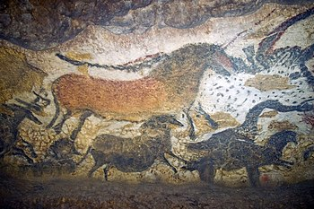 | |
| Cum să îmi găsesc inspirația? | ||
|---|---|---|
| Muzeul de artă rea | ||
|
Niciodată să nu-ți fie frică să greșești pictând, fiindcă din greșeli învățăm, iar uneori acestea ne pot conduce spre descoperirea a ceva nou, a unor tehnici sau a unor idei în cazul picturii. Și pentru că vreau să știi cât de amuzant și interesant este să greșești, vezi aici despre Muzeul artei proaste. Acest muzeu privat are scopul de a celebra lucrările artiștilor care nu au fost expuse sau apreciate niciunde în altă parte. Colecția conține peste 700 de piese de artă prea rea pentru a fi ignorată. Capodopere din acest muzeu: |
||
 |
||
 | ||
 |
 |
|
| De ce adolescentul alege pictura? | ||
|---|---|---|
Am adresat această întrebare prietenilor mei, adolescenți de 14-17 ani. În viziunea adolescentului, arta reprezintă o metodă nonverbală de interpretare a propriilor gânduri și sentimente prin culori, figuri și textură, iar procesul în sine te teleportează într-o lume proprie, magică, liniștită unde poți fii tu însuți și să te lași purtat de imaginație. |
||
„Drumul meu în lumea artei a început la vârsta de 12 ani. Pe atunci, fiind de nedespărțit de albumul de pictură, am înțeles că mă simt liber și cuprins în liniștea mea interioară. Studierea acestei arte am început-o de la vaze și ulcioare, fiindcă astfel înveți să construieșți obiecte; acum însă le urăsc și prefer să pictez oameni. Căutând inspirație în aplicația PINTEREST și studiind puțin anatomia corpului uman, am ajuns la rezultate care mă satisfac, fapt care mi-a demostrat că orice om poate învăța să picteze dacă are voință.” |
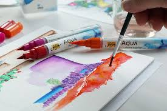 | |
| 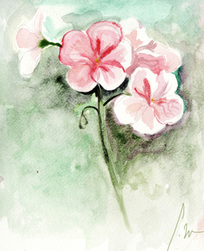 | „În clasa a 7-a, datorită faptului că a fost un an aglomerat la orele de educație plastică, am realizat că mă regăsesc în desen. De aceea, am decis să mă ocup mai profesional de el, începând astfel să frecventez școala de pictură. Având ore de 2-3 ori pe saptămână, îmi dezvoltam regulat capacitățile. Primele mele desene au fost schițe în creion ale unor animale, printre care prevalau caii. De obicei îmi găsesc inspirația în lumea ce mă înconjoară și în sentimentele mele, astfel că acest animal era unul din preferatele mele. Însă acum, după ani de experiență, prefer să ilustrez desene tematice care cuprind un anumit eveniment, desene cu o istorie deosebită, peisaje sau arhitectură. De la cel mai simplu material (creionul) am avansat la acuarele și ulei, materiale care acum îmi sunt cel mai pe plac.” |
„Eu nu sunt persoana care a învațat să își exprime sentimentele pe pânză, dar sunt un admirator al persoanelor care au rezultate frumoase în acest domeniu. Pe o scara de la 1 la 10, cred că știu să pictez de nota 1, dar dragostea față de artă o am din copilărie, când încercam să reprezint cu creioane colorate obiectele din jurul meu. Îmi place să privesc creațiile expuse în muzee, mereu întrebându-mă: Oare la ce se gândea pictorul când lucra? Ce simțea? Sau de ce a decis să realizeze această pictură?” |
| Galerie de artă adolescentină |
|---|
| 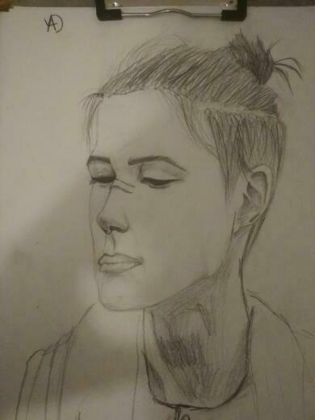 Vlad,13 ani |
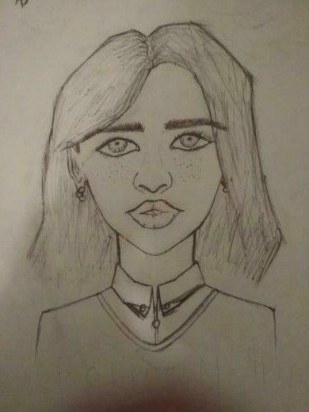 Vlad,13 ani |
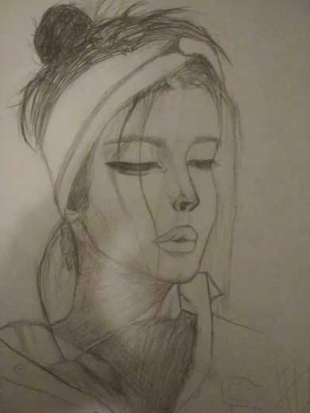 Vlad,14 ani |
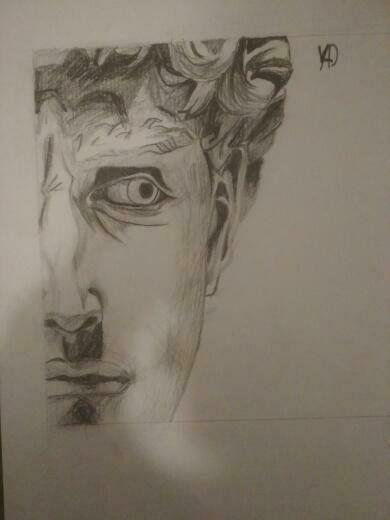 Vlad,15 ani |
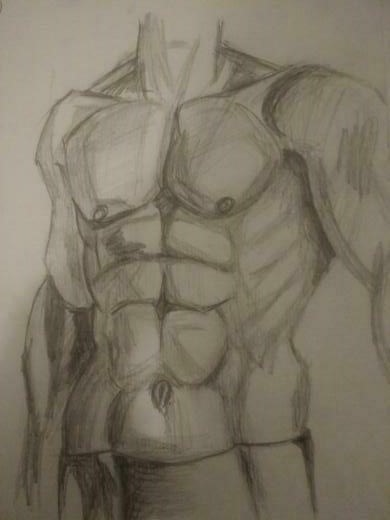 Vlad,15 ani |
| 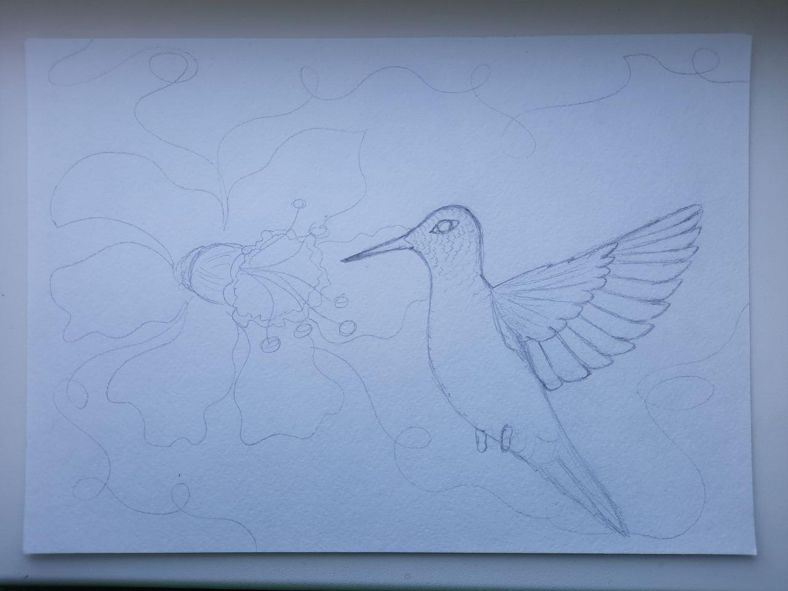 Elena, 12 ani |
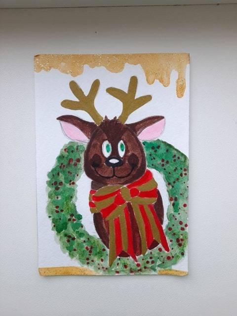 Elena, 12 ani |
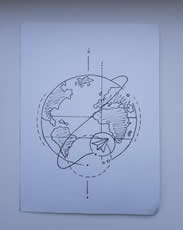 Elena, 13 ani |
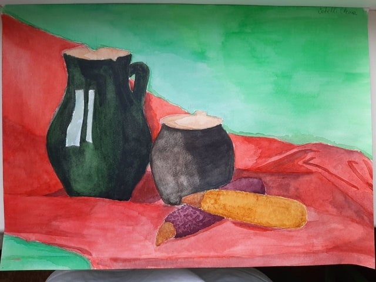 Elena, 15 ani |
| 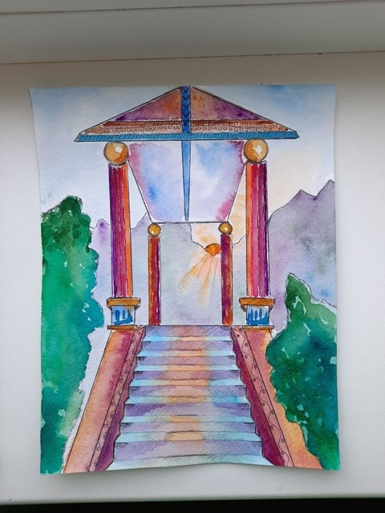 Elena, 16 ani |
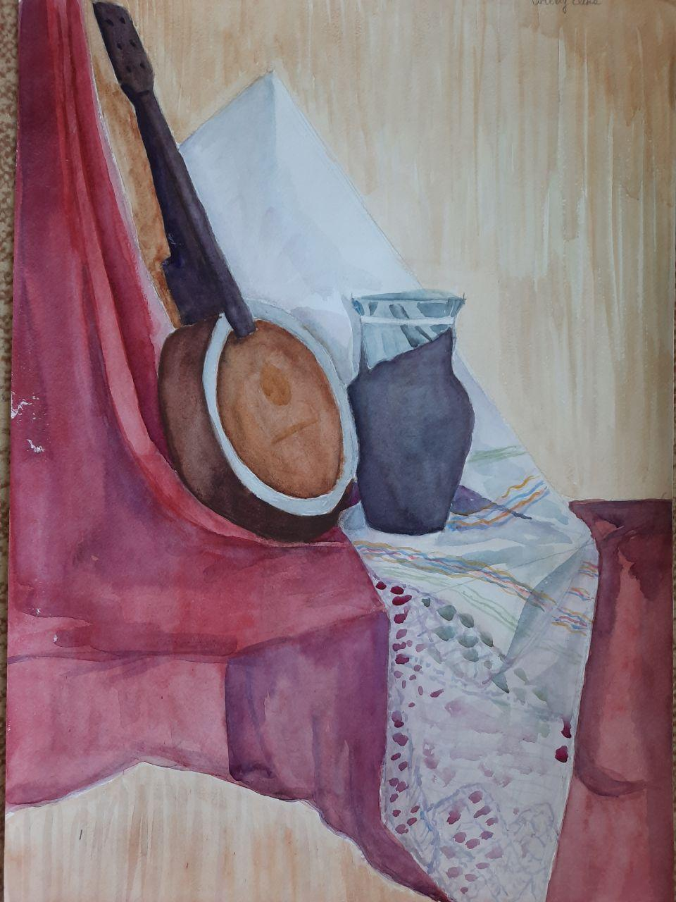 Elena, 16 ani |
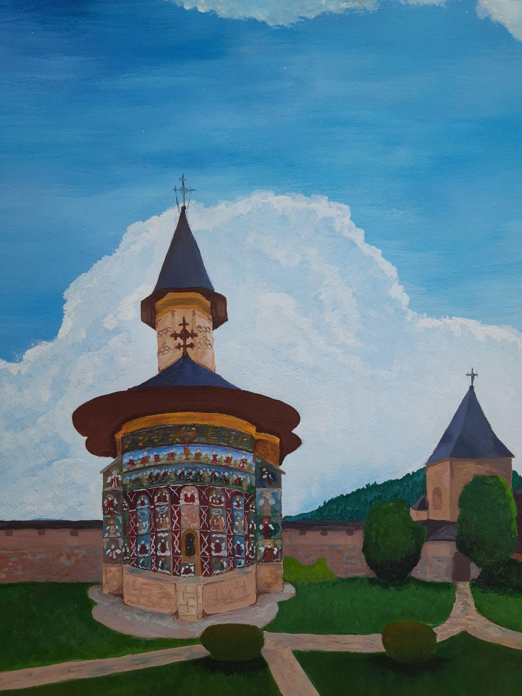 Elena, 16 ani |
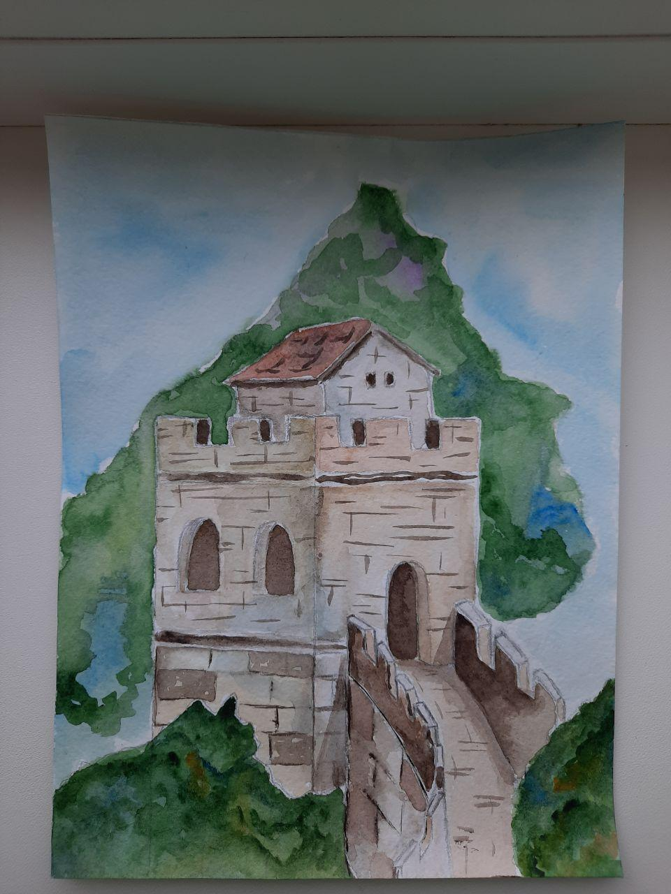 Elena, 16 ani |
| Cum încep eu? | ||
|---|---|---|
Primul lucru pe care trebuie să-l faci e să înveți să construiești forme cu mâna liberă. Te așezi într-o poziție confortabilă ție, te înarmezi cu foaie și creion, îți limpezești mintea și încerci să faci un cerc ideal. | ||
| 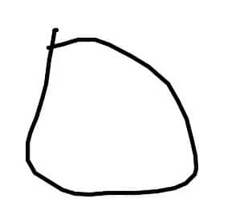 | Prima dată ai putea obține un rezultat ca în imaginea din stânga, dar nu te da bătut și repetă până îți va reuși. E posibil să ajungi la un rezultat ca în imaginea din dreapta în câteva zile, săptămâni sau luni, dar te asigur ca până la final vei reuși ceea ce îți propui. |
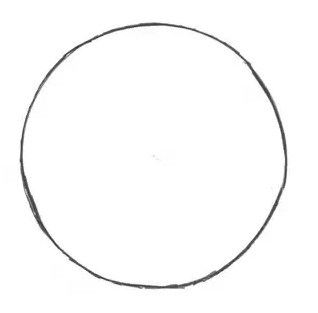 |
Acest lucru ar trebui să te țină ocupat ceva timp, mai ales dacă primul tău desen arată ca cercul din stânga de pe această pagină. Însă după ce ai acordat ceva timp (6 luni sau un an) și ai trecut prin acest exercițiu, iar acum esți capabil să desenezi un cerc ideal, în fața ta apar 2 perspective: Poți învăța singur să desenezi cu ajutorul lecțiilor gratis, cărților sau videourilor de pe youtube. Un curs gratis pe care ți-l recomand, ce constă în 4 teme de bază, este pagina web de Monika Zagrobelna. Pe pagina respectivă vei găsi informații mai detaliate despre cum începi, cum folosești formele geometrice pentru construcția corpurilor și ce este stilul în pictură. |
||
Pe canalul Drawing & Painting - The Virtual Instructor găsești o mulțime de tutoriale care te învață cum să ilustrezi diverse forme. De asemenea, poți găsi foarte ușor pe internet tutoriale sau lecții online despre cum să desenezi, să colorezi, să faci umbre etc. Dar dacă ai nevoie de un nivel mai ridicat ca exemplu și inspirație, poți urmări paginile în rețelele de socializare ale pictorilor care te inspiră. Unele exemple: Bob Ross , Zhao Xiaoli, Art blog |
Această perspectivă se potrivește pentru persoanele care nu pot învăța independent. Astfel, ajungând la o școală de arte/pictură, vei începe studiul în mod regulat, de la lucruri de bază - cum ar fi interpretarea pe foaie în diferite tehnici a naturii moarte -, vei stăpâni diverse materiale, vei înțelege cum construiesți un cadru estetic. Dar dacă totuși ai rămas pe varianta 1, încearcă să urmărești această listă de teme, pe care ar fi preferabil să o parcurgi în ordinea următoare: |
În funcție de tehnica pe care o folosești se deosebesc și materialele de care ai nevoie, de aceea te voi îndruma pe care să alegi pentru a obține un rezultat cât mai bun. |
||
| 1. Acuarela | ||
|---|---|---|
| 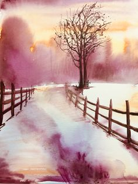 |
Acuarela, spre deosebire de alte tehnici, se bazează pe transparență, care lasă vizibil albul colii de hârtie, ceea ce oferă lucrărilor luminozitate, ușurință și delicatețe. Uscarea rapidă necesită și o execuție rapidă, de aceea mult timp această tehnică se folosea la schițe și pentru învățare. Sigur, pentru început nu vei avea nevoie de materiale profesionale, dar voi prezenta ambele variante. |
|
|
CULOAREA: Când nu ești hotărât ce acuarelă să cumperi, fă alegerea în favoarea paletei ce are în compoziție miere, fiindcă aceasta permite aplicarea a mai multă culoare și favorizează distribuirea fară probleme a petei de culoare. De asemenea, se păstrează mult mai mult timp, chiar dacă sunt lăsate o perioadă mai lungă în aer liber. Acuarela Sennelier La Petite Aquarelle - pictura profesionistă |
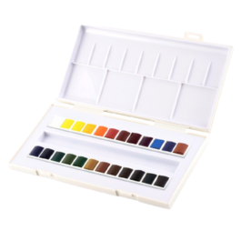 | |
Pensulele perfecte pentru această tehnică au formă alungită, fiind rotunde la bază. Sunt confecționate din păr moale de veveriță. Ele diferă ca preț și calitate în funcție de brand. Un exemplu de pensule profesionale sunt cele de la brandul daVinci, dar poți găsi și altele destul de bune care să corespundă criteriilor mai sus menționate chiar și în supermarket-uri. |
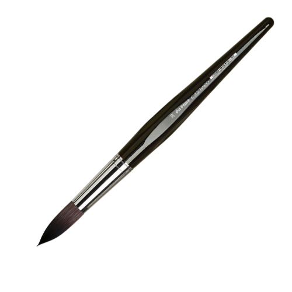 | |
| 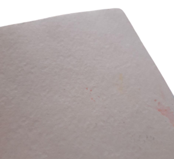 |
Coala de hârtie pe care ar fi de preferat să o folosești trebuie să fie destul de groasă și să aibă o suprafață structurată. Astfel, atunci când vei utiliza o cantitate mare de apă pentru a oferi desenului transparență, aceasta nu se va rupe. Un exemplu în aceste sens este White night - pentru desen profesional |
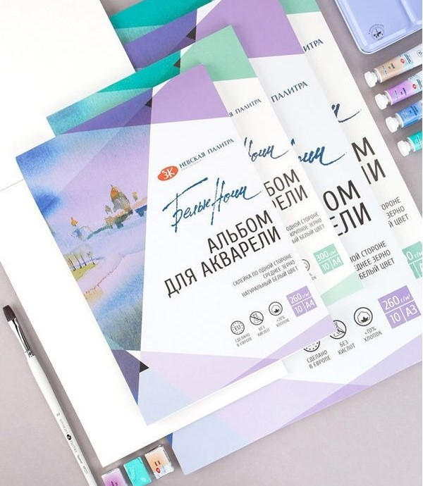 |
| 2. Guașă | ||
|---|---|---|
| 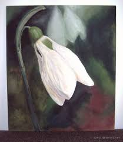 | Guașa, spre deosebire de acuarelă, se bazează pe straturi de culoare și saturație cromatică, folosită în așa-zisa pictură opacă, ce permite aplicarea de culori deschise peste tente închise. Este o varietate de tempera, o tehnică de pictură ieftină, care folosește ca diluant apa, se spală lesne și se usucă rapid. Se folosește destul de ușor, iar pictura poate fi retușată în caz că se comit greșeli, de aceea este potrivită pentru începători și picturi nesigure. |
|
CULOAREA: La guașă e greu să greșești alegând setul de culori, fiindcă oricare îți oferă posibilitatea să ajungi la un rezultat bun. |
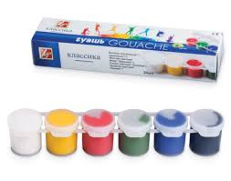 | |
Pensulele perfecte pentru guașă au forma pătrată, fiind plate la bază și confecționate din păr de ponei sau fire sintetice, pentru a putea oferi structură desenului. De obicei culoarea părului e mai deschisă și mai dură decât la pensulele pentru acuarelă, astfel putându-le deosebi. |
||
| 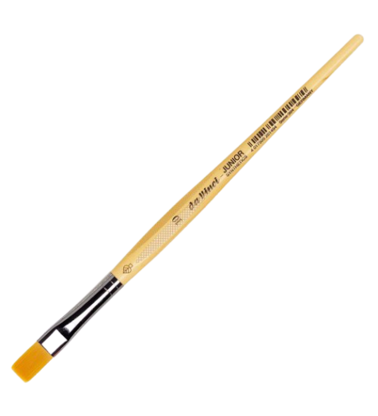 |
La fel ca în cazul de mai sus, găsești pensule profesionale pentru guașă de la brandul daVinci, dar poți cumpăra și din supermarket-uri unele destul de bune care să corespundă criteriilor menționate. Coala de hârtie folosită pentru această tehnică este aceeași cu cea pentru acuarelă, dar poate fi înlocuită de carton. |
|
| 3. Ulei | ||
|---|---|---|
| 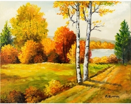 |
Culorile de ulei sunt vopsele cu uscare lentă compuse din particule fine de pigmenți suspendate în uleiuri vegetale. Uleiul din conținutul acestora oferă culorilor strălucire și duritate. De aceea, creațiile în ulei sunt folosite pe bază de decor. Impermeabilitatea și densitatea uleiului permit aplicarea culorilor deschise peste cele întunecate, astfel oferind oportunitatea de a crea un desen cât mai realist. Ca dizolvant pentru aceste culori se folosește uleiul de in. CULOAREA: Importantă în set este prezența culorilor potrivite pentru desenul tău. exemple: Culori de ulei rusești Sonnet sau Ladoga; |
|
|
Pentru pictură în tehnica ulei se folosesc pensule din păr de porc, dar se pot utiliza oricare alte pensule după dorința celui ce picteză. Unii pictori folosesc în loc de pensule mastihinul, pentru a oferi o strucură mai pronunțată lucrării. Pânza: Pentru pictura în ulei, pictorii folosesc, încă de la apariția acestei tehnici, pânză de in, întinsă pe carton sau lemn și grunduită. Cea mai ușoară cale de a face rost de o astfel de pânză este procurarea ei, deja grunduită din magazine cu produse speciale pentru pictură. |
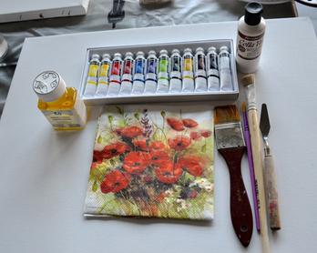 | |
| 4. Pastel | ||
|---|---|---|
| 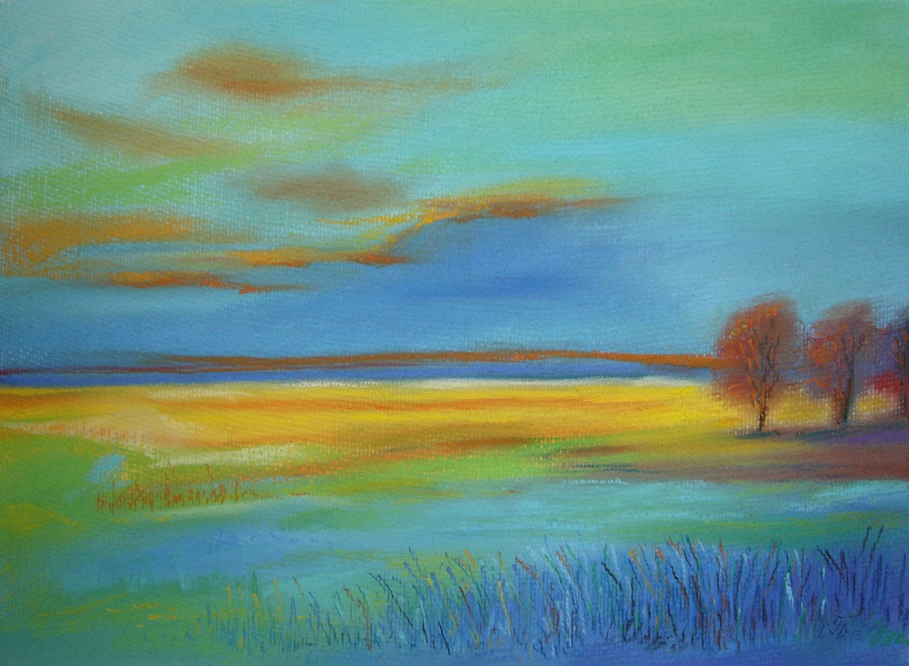 |
Este o tehnică artistică care folosește bețisoare ce sunt compuse din pigment pudră amestecat cu un liant. Creioanele pentru pastel uscat sunt de mai multe tipuri: cele moi sunt cele mai frecvent folosite, dar necesită fixare, iar cele tari sunt folosite la detalii. Cu acestea se pictează pe foaie obișnuită, fără a dizolva pigmentul cu apă. În caz contrar, se folosește foaia pentru acuarelă. exemplu: set de culori de la brandul Gallery |
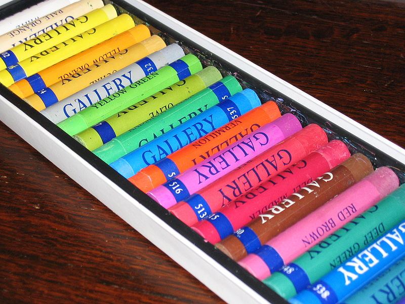 |
| 5. Vitraliu | ||
|---|---|---|
| 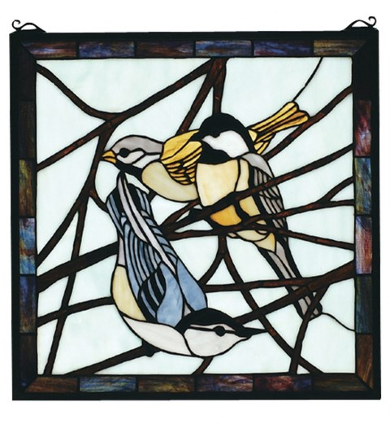 | Vitraliul este tehnica artistică obținută din îmbinarea unor bucăți de sticlă diferit colorate cu ajutorul unei carcase de metal. Realizarea acestei tehnici este dificilă și de aceea a fost adoptată o altă modalitate care presupune desenarea conturului formelor si detaliilor pe sticlă (în loc de carcasă), apoi colorarea cu vopsea. |
|
|
Pentru realizarea unei picturi prin această tehnică se poate folosi orice sticlă, pensulele tale preferate și culori pentru vitraliu. exemplu: Set de culori pentru vitraliu Decola Multe dintre materialele necesare le poți găsi în supermarket-uri sau în magazinele specializate din orașul tău. O altă variantă este magazinul online ProfiArt. |
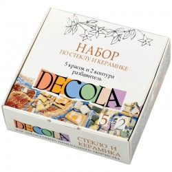 | |
| Cât de mult mi se potrivește această artă? ~ Chestionar ~ |
||
|---|---|---|
Calculând punctajul (alege doar ceea ce te caracterizează), vom realiza o evaluare a potențialului tău în începerea practicării acestei arte: |
||
Inima ta e făcută să își exprime sentimentele pe o coală de hârtie. Cred că ai înțeles și tu pe parcurs acest lucru. Eliberează-ți imaginația și creează. Sunt sigură că vei reuși să dai naștere unor desene minunate. Nu te lăsa la primul eșec, încearcă cât mai multe metode și tehnici și vei descoperi una care îți este pe plac. Nu lăsa pe nimeni să te descurajeze, eu cred în tine! |
Nu strică niciodată să încerci! Urmând sfaturile noastre este posibil sa descoperi o înclinație neașteptată în pictură. Dar nu fii dezamăgit dacă pasiunea către pictură sau răbdarea nu îți sunt la îndemână. Vizitează celelalte pagini ale site-ului nostru - ducând cursorul peste butonul Meniu din bara de sus - și poate te vei regăsi în altă artă. Există speranță! Crede și vei realiza! |
Se pare că pictura nu e pentru tine. Poate nu ești gata să dedici o perioadă atât de îndelungată pentru rezultate treptate sau ești o persoană foarte activă, de accea nu ai rabdarea potrivită pentru desen. Dar știi ce înseamnă asta? Că te poți regăsi în altă artă sau activitate. Posibil dansul e ceea ce îți va încânta inima. Deci ce mai aștepti? Vezi în Meniu secțiunea Dans! |